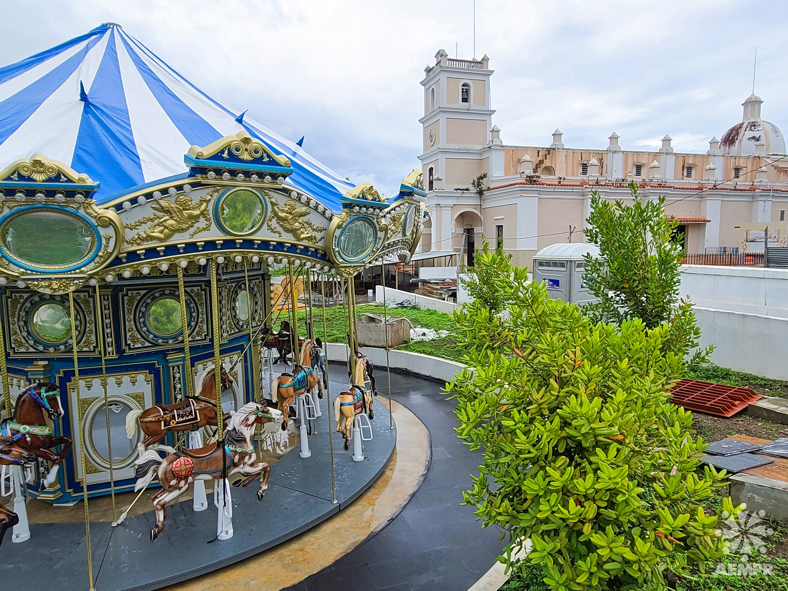
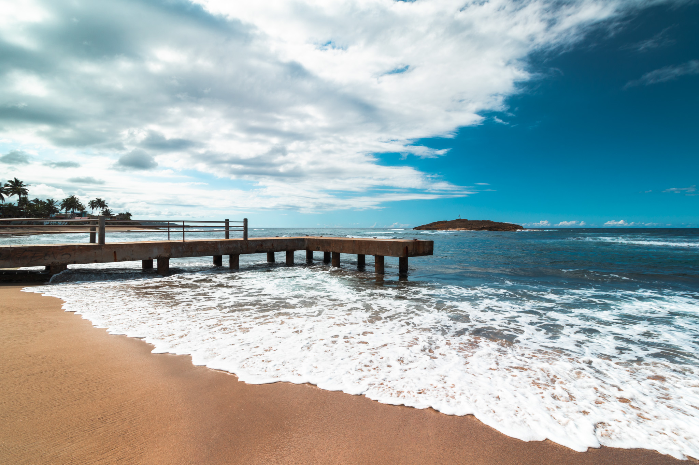
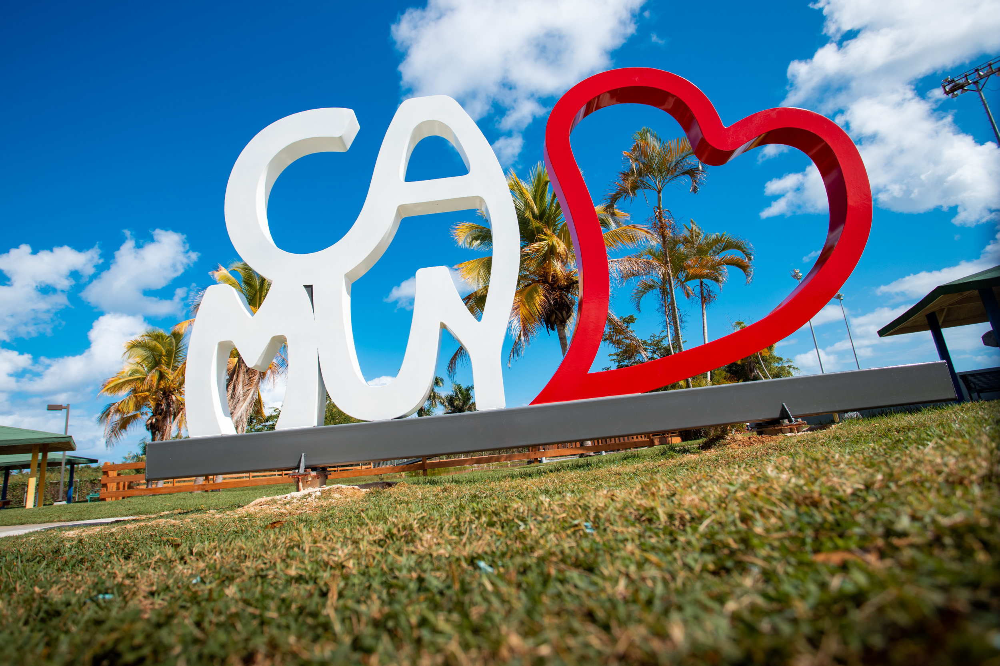

Parque de las Cavernas de Río Camuy

El Parque nacional de las Cavernas del Río Camuy es uno de los mayores sistemas de cuevas en el mundo y el más grande en el hemisferio occidental.
Pueden visitar el Parque de las Cavernas de Río Camuy en:
- Dirección: Carr. 129 K. 18.9, Quebrada, 00669
- Website:islandsofpuertorico.com
- Número telefónico: (787)-898-3136
Plaza de Recreo Ramon Frade
La plaza pública de recreo de Cayey es un perfecta oportunidad para ver la cultura del hermoso pueblo de Cayey.
- Dirección: 4R7M+3G2, PR-170, Cayey, 00736
- Número telefónico: (787)-738-3211
Peñón Amador Beach

La playa El Peñón Amador, también conocida como el Peñón de la Cruz o Playa Los Amadores es una pequeña playa convertida en uno de los principales atractivos turísticos de la zona de Camuy ubicada en la zona norte de la isla de Puerto Rico.
Por su gran belleza natural, la playa es muy frecuentada por pescadores locales y visitantes aunque sin embargo es una playa peligrosa debido a sus fuertes corrientes.
Su nombre hace referencia a una enorme piedra que se encuentra en la playa con una cruz que sobrepasa los 15 pies de altura y sirve de rompe olas.
- Dirección: Punta Peñon, Camuy 00627
Parque Pasivo José A. Méndez Franqui
Ubicado en la calle Iguina en el mismo pueblo de Camuy. Perfecto para un salida familiar para este fin de semana. Es un lugar con bastante estacionamiento, banquitos, casetas con mesas, lugar fresco, tiene un puente con lago, patos sueltos por el parque y las letras Camuy para fotos. Este pueblo tiene varios spots bien bonitos para visitar y todos quedan cerca uno de otro. Pronto estaré poniendo fotos de los demás lugares.
- Dirección: F5M4+WVC, Calle Iguina, Camuy, 00627
- Número telefónico: (787)-898-2160